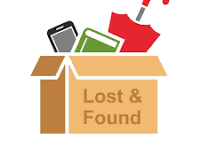

What We Do
This system allows users to report lost or found items and search for belongings they may have misplaced. Whether you’ve lost a school ID, phone, bag, or found someone else's belongings, our system connects people to get items returned.
